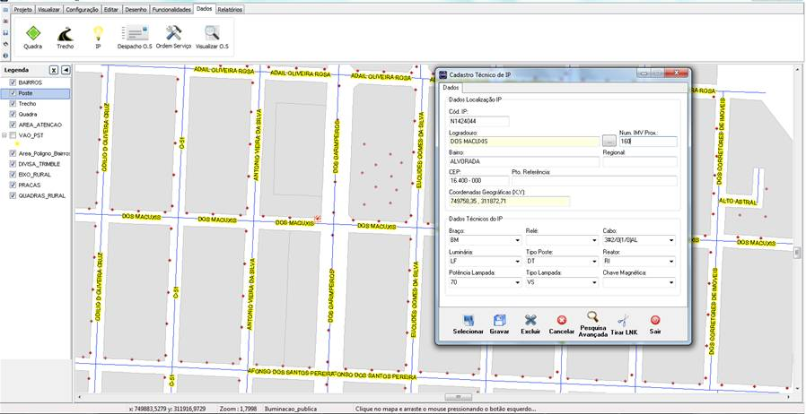

ILUMINAÇÃO PÚBLICA
Objetivo
Apoio ao gerenciamento da rede de Iluminação Pública, através de cadastro geográficos, Call Center, Manutenção, almoxarifado e dispositivo móvel.
Módulos
- Cadastro geográficos
- Call Center
- Gerenciamento de Ordem de Serviço
- Controle de Materiais
- Sistema Tablet
- Relatórios
SIG – Iluminação Pública
O SIG – Iluminação Pública é um produto que vem sendo desenvolvido a mais de 10 anos e consolida toda a experiência em Sistema de Informações Geográficas.
- Interface fácil
- Sem limites de Licença
Diversas ferramentas (Mapa temático, topologia, Buffer, especialização, etc.)
Módulos
- Cadastros Geográficos
- Cadastro MUB
- Quadras, logradouros, praças, pontos de referencia, Bairros entre outros)
- Cadastro de Transformadores
- Cadastro de IP
Módulos de Relatorios
- Relatório de Ordens de Serviço
- Relatório de OS Pendentes e Executadas
- Relatório de Pontos de IP por Logradouro
- Relatório de Fatura (Consumo de energia baseado na potencia instalada e horário de funcionamento do parque de iluminação)
- Relatório de Dados Cadastrais de IP
- Relatório de Tempo Médio de Atendimento de OS
- Relatório de Garantia de Materiais
- Relatório de Detalhe de Abertura de Solicitação
- Relatório de Quantitativo de Materiais do Parque de Iluminação
- Relatório de Indicadores Anuais de Qualidade
- Relatório de Equipamentos / Lote
- Relatório de Materiais Empenhados nas Equipes.
